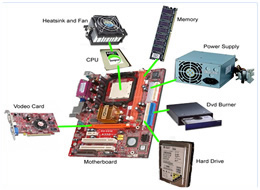
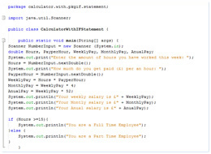

1
1 2
2 3
3 4
4 5
5 6
6 7
7 8
8 9
9

Key Stage 4 - ICT IGCSE
The Cambridge ICT IGCSE syllabus combines theoretical and practical studies focusing on the ability to use common software applications to solve problems.

Computer Science
Computer Programming
Computer Science is an important part of the ICT curriculum. This website will provide learning resources to develop your programming skills including the theoretical element.